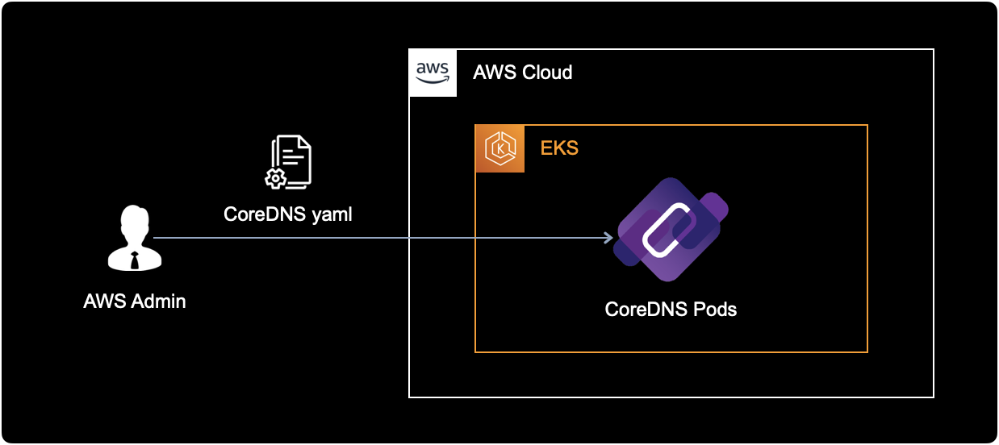
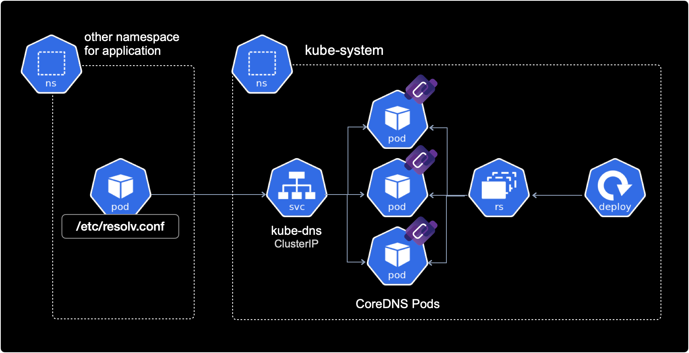

CoreDNS ndots 설정
개요
알람 푸시 서비스와 같은 배포된 어플리케이션들에서 불필요한 coredns 리퀘스트를 줄이기 위해 deployment 또는 pod에 직접 ndots 설정을 추가합니다.
CI/CD 파이프라인에서 ArgoCD를 사용하는 경우, ArgoCD의 커스텀 리소스 중 하나인 Rollout에도 CoreDNS ndots 설정은 동일하게 적용할 수 있습니다.
배경지식
CoreDNS
CoreDNS는 쿠버네티스 클러스터 내에서 DNS 이름을 해결하는 도구입니다. CoreDNS는 서비스나 파드 등 쿠버네티스에서 사용되는 모든 리소스에 대한 DNS 서비스를 제공하며, 쿠버네티스 클러스터의 확장성과 가용성 면에서도 우수한 성능을 보입니다. 현재 CoreDNS 프로젝트는 CNCFCloud Native Computing Foundation에 의해 관리 운영되고 있습니다.
쿠버네티스 클러스터에서 구동중인 파드들은 CoreDNS에게 DNS 주소를 질의하여 다른 서비스나 파드 리소스를 찾을 수 있습니다.
kube-dns와 CoreDNS
kube-dns는 CoreDNS가 나오기 전까지 사용되던 구버전 DNS 에드온입니다. CoreDNS는 kube-dns보다 유연성과 확장성이 높으며, 다양한 백엔드 데이터 소스와 플러그인을 지원합니다.
쿠버네티스는 공식적으로 kube-dns보다 CoreDNS 사용을 권장하고 있으며, 쿠버네티스 1.13 버전부터 기본 DNS 에드온으로 CoreDNS가 사용되고 있습니다.
CoreDNS 주소 포맷
쿠버네티스 클러스터에서 CoreDNS를 사용하는 경우 Service와 Pod에는 각각 아래와 같은 형식의 DNS A 레코드가 자동 할당됩니다.
Service의 A Record
SERVICE-NAME.NAMESPACE.svc.cluster.local
server-mysql.mysql.svc.cluster.local
------------ -----
| |
| +—–> Namespace
+—–—–—–—–—–—––> Service Name
server-redis.redis.svc.cluster.local
------------ -----
| |
| +—–> Namespace
+—–—–—–—–—–—––> Service Name
Pod의 A Record
POD-IP-ADDRESS.NAMESPACE.pod.cluster.local
예시로 default 네임스페이스에 172.12.3.4 IP를 가진 파드의 경우 아래와 같은 A 레코드로 해석됩니다.
172–12–3–4.default.pod.cluster.local
---------- -------
| |
| +—–> Namespace
+—–—–—–—–—–—–> Pod IP address
환경
EKS 클러스터
EKS 클러스터는 v1.21 버전이며, EC2 Managed Node를 사용하고 있습니다.
$ kubectl get node | awk '{print $5}'
VERSION
v1.21.5-eks-9017834
v1.21.5-eks-9017834
...
CoreDNS
EKS 클러스터에 CoreDNS deployment를 manifest로 배포해서 사용하는 환경입니다.

CoreDNS의 모든 리소스는 kube-system 네임스페이스에 위치합니다.
다른 네임스페이스들의 Pod들은 CoreDNS를 참조하기 위해 ClusterIP 타입의 CoreDNS 서비스로 접근합니다.

CoreDNS와 다른 파드간의 통신은 클러스터 내부간 통신으로 이루어집니다.
클러스터 내부 통신이기 때문에 CoreDNS 서비스 타입은 ClusterIP를 사용합니다.
CoreDNS의 동작방식도 결국 CoreDNS pod에 의해 DNS 서비스를 제공합니다.
kubectl get 명령어로 실제 CoreDNS의 deployment와 pod 환경을 확인합니다.
$ kubectl get deploy,pod \
-n kube-system \
-l k8s-app=kube-dns
결과값은 다음과 같습니다.
NAME READY UP-TO-DATE AVAILABLE AGE
deployment.apps/coredns 18/18 18 18 15d
NAME READY STATUS RESTARTS AGE
pod/coredns-86dfdb55fc-687dx 1/1 Running 0 15d
pod/coredns-86dfdb55fc-695t7 1/1 Running 0 15d
pod/coredns-86dfdb55fc-7x9mn 1/1 Running 0 15d
pod/coredns-86dfdb55fc-bqxw8 1/1 Running 0 15d
pod/coredns-86dfdb55fc-cq5rd 1/1 Running 0 15d
pod/coredns-86dfdb55fc-dhfch 1/1 Running 0 15d
pod/coredns-86dfdb55fc-f2v8z 1/1 Running 0 15d
pod/coredns-86dfdb55fc-gr46t 1/1 Running 0 15d
pod/coredns-86dfdb55fc-l562c 1/1 Running 0 15d
pod/coredns-86dfdb55fc-m6qm4 1/1 Running 0 15d
pod/coredns-86dfdb55fc-rscmz 1/1 Running 0 15d
pod/coredns-86dfdb55fc-t2tt5 1/1 Running 0 15d
pod/coredns-86dfdb55fc-td8pw 1/1 Running 0 15d
pod/coredns-86dfdb55fc-tn5gv 1/1 Running 0 15d
pod/coredns-86dfdb55fc-w7n86 1/1 Running 0 15d
pod/coredns-86dfdb55fc-zjqpv 1/1 Running 0 15d
pod/coredns-86dfdb55fc-zk68t 1/1 Running 0 15d
pod/coredns-86dfdb55fc-zmjmb 1/1 Running 0 15d
위의 경우 18개의 CoreDNS 파드가 여러 워커 노드에 걸쳐 분산 배포된 형태입니다.
일반적으로 일부 노드에 장애가 발생하더라도 CoreDNS 서비스의 고가용성HA을 유지하기 위한 목적으로 위와 같이 구성합니다.
CoreDNS는 외부(다른 네임스페이스)로부터 요청을 받기 위해 ClusterIP 타입의 Service 오브젝트가 존재합니다.
$ kubectl get service \
-n kube-system \
-l k8s-app=kube-dns
결과값은 다음과 같습니다.
NAME TYPE CLUSTER-IP EXTERNAL-IP PORT(S) AGE
kube-dns ClusterIP 11.200.0.10 <none> 53/UDP,53/TCP 129d
ndots 설정방법
1. spec 수정
ArgoCD의 커스텀 리소스인 Rollout에 ndots 설정을 추가하는 상황입니다.
apiVersion: argoproj.io/v1alpha1
kind: Rollout
metadata:
...
spec:
template:
spec:
containers:
...
dnsConfig: # ndots configuration
options: # ndots configuration
- name: ndots # ndots configuration
value: "1" # ndots configuration
ndots 값은 FQDN으로 취급될 도메인에 포함될 .dot의 최소 개수를 의미합니다.
ndots 기본값은 5입니다.
ndots를 1로 조정해서 불필요한 CoreDNS 리퀘스트를 줄일 수 있습니다.
2. 설정 적용
ndots 설정을 추가한 다음 적용하기 위해 kubectl apply 또는 (파이프라인에서 ArgoCD를 사용하는 경우) 소스 레포지터리에 코드를 push 합니다.
kubectl edit 명령어로 yaml을 직접 수정했을 경우에는 즉시 적용되므로 다시 deployment나 application을 배포할 필요가 없습니다.
3. ndots 설정 확인
deployment 또는 ArgoCD의 rollout에서 spec.template.spec.dnsConfig 설정을 확인합니다.
$ kubectl get deploy -n hello-greeter hello-greeter
...
spec:
template:
spec:
containers:
...
dnsConfig: # ndots configuration
options: # ndots configuration
- name: ndots # ndots configuration
value: "1" # ndots configuration
ndots 값이 추가되었고, 값은 "1"로 설정된 걸 확인했습니다.
이제 deployment 또는 ArgoCD의 rollout에 의해 생성된 파드에서도 ndots 설정을 확인합니다.
특정 파드에 접속해서 /etc/resolv.conf 파일 내용을 조회하는 명령어입니다.
$ kubectl exec -it hello-greeter-77f6db78d-4m6rw \
-n hello-greeter \
-- cat /etc/resolv.conf
위 명령어에서 파드 네임 hello-greeter-77f6db78d-4m6rw는 자신의 환경에 맞게 변경해서 명령어를 실행합니다.
아래는 파드에 들어있는 /etc/resolv.conf 설정파일 내용입니다.
search hello-greeter.svc.cluster.local svc.cluster.local cluster.local ap-northeast-2.compute.internal
nameserver 11.200.0.10
options ndots:1
nameserver
nameserver의 IP가 CoreDNS의 ClusterIP를 가져온 점을 확인할 수 있습니다.
클러스터의 모든 파드들은 이런 방식으로 CoreDNS 서비스에 질의하고 응답을 받습니다.
resolv.conf가 생성되는 원리
각 노드마다 동작하고 있는 kubelet은 pod를 실행할 때, /etc/resolv.conf 파일 안에 CoreDNS의 ClusterIP주소를 nameserver로 등록합니다.
/etc/resolv.conf 설정 파일은 DNS를 질의하는 클라이언트가 어디로 요청을 보낼지 판단하기 위한 용도로 사용합니다.
options
options는 기본값 ndots:5 대신 ndots:1 옵션으로 변경된 것을 확인할 수 있습니다.
참고자료
DNS Config
How to change ndots option default value of dns in Kubernetes
ndots 설정 방법
Pod’s DNS Config
Kubernetes 공식문서에 언급된 Pod 에서 DNS 설정 추가하기
CoreDNS
Kubernetes의 DNS, CoreDNS를 알아보자
CoreDNS를 쉽고 명확하게 설명한 좋은 글입니다.